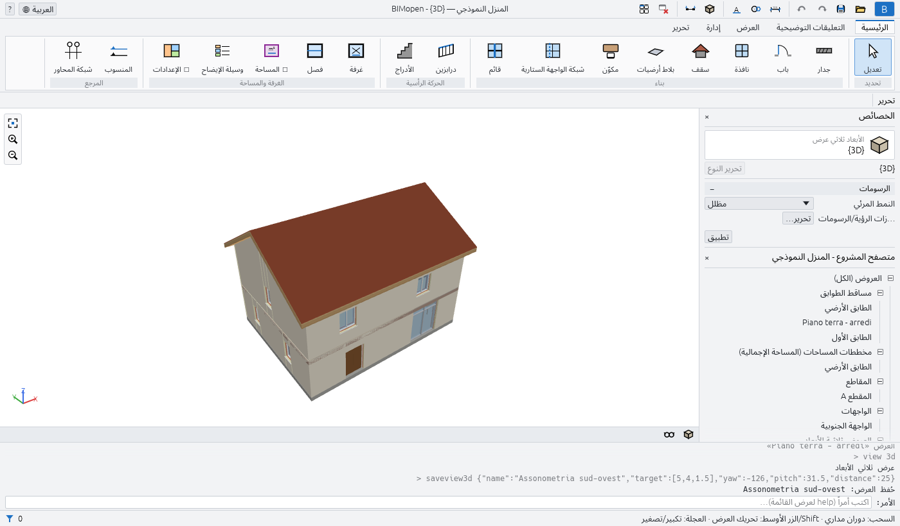
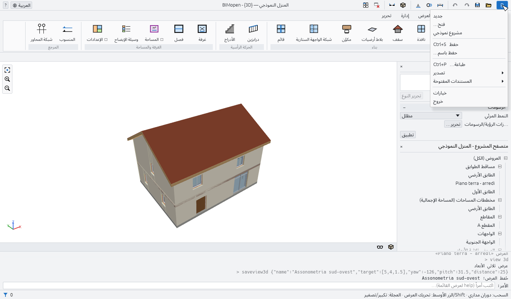
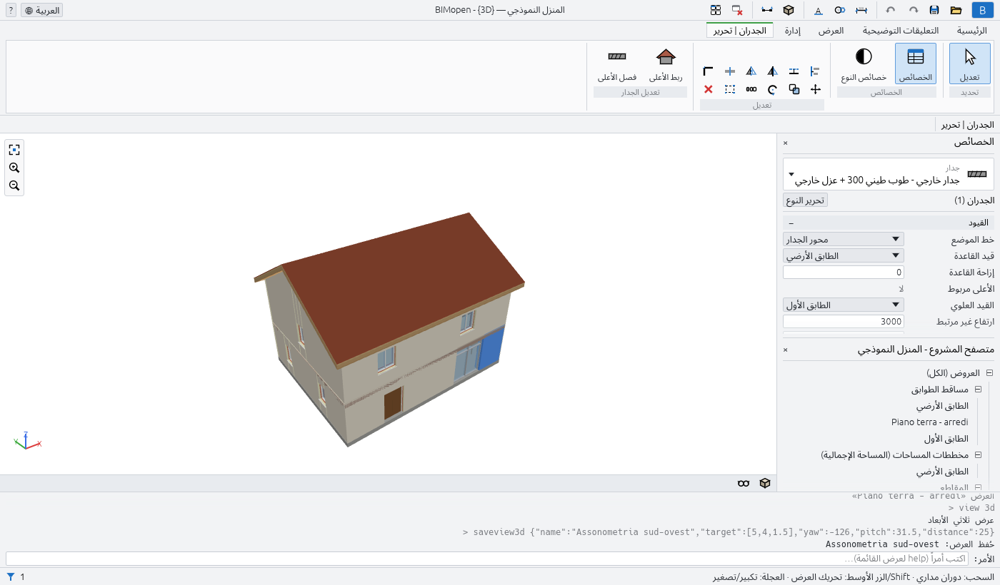
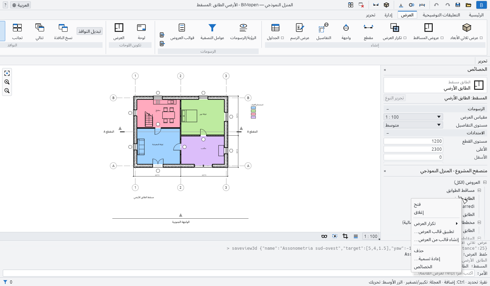
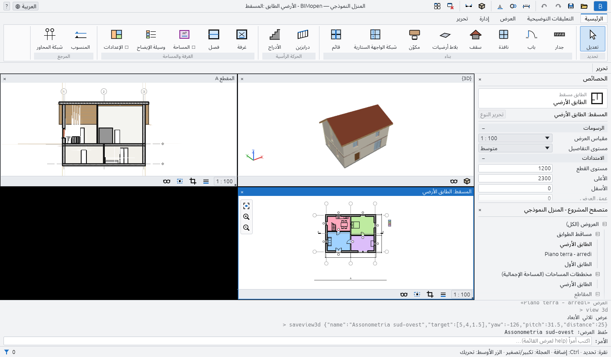
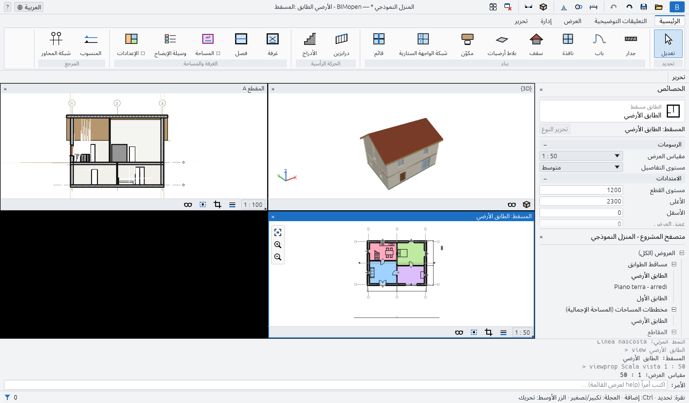

الواجهة
لنافذة BIMopen الأجزاء نفسها في نسخة سطح المكتب وفي نسخة الويب. من الأعلى إلى الأسفل:
- شريط العنوان، وفيه قائمة التطبيق، وشريط أدوات الوصول السريع، واسم المشروع والعرض النشط، وقائمة اللغة، وقائمة المساعدة؛
- الشريط، بتبويباته ولوحات أدواته؛
- شريط الخيارات، بإعدادات الأداة النشطة؛
- على اليمين، لوحة الخصائص فوق متصفح المشروع؛
- منطقة الرسم، حيث تُفتح العروض في نوافذ، لكل منها شريط التحكم بالعرض الخاص بها؛
- سطر الأوامر، مع سجل ما تم تنفيذه؛
- شريط الحالة.

في العربية تكون النافذة كلها معكوسة: اللوحات على اليمين، ويُقرأ الشريط وشريط الخيارات من اليمين إلى اليسار، ويقع شريط التنقل على الحافة اليسرى للعروض.
قائمة التطبيق
يفتح الزر الأزرق B في الطرف الأيمن من شريط العنوان قائمة التطبيق: الأوامر التي تعمل على المشروع كله.

| العنصر | ما يفعله |
|---|---|
| جديد | يغلق المشروع الحالي ويبدأ مشروعًا جديدًا من القالب الافتراضي: منسوبان بمسقطيهما، والأنواع الافتراضية |
| فتح… | يفتح مشروع .bimopen، أو يستورد نموذج .rvt، يُختار في نافذة حوار للملفات. وفي المتصفح اسحب الملف إلى الصفحة بدلًا من ذلك |
| مشروع نموذجي | يفتح المنزل النموذجي |
| حفظ Ctrl+S | يحفظ المشروع في ملفه؛ والمشروع الذي لم يُحفظ قط يطلب اسمًا، مثل حفظ باسم… |
| حفظ باسم… | يحفظ المشروع في ملف .bimopen جديد ويواصل العمل على ذلك الملف |
| طباعة… Ctrl+P | يطبع اللوحات إلى PDF |
| تصدير ▸ تصدير IFC4… | يكتب النموذج في ملف IFC4 |
| تصدير ▸ تصدير المسقط SVG… | يكتب المسقط النشط كرسم SVG |
| تصدير ▸ تصدير العرض PNG… | يكتب العرض النشط كصورة PNG |
| المستندات المفتوحة | يسرد نوافذ العروض المفتوحة؛ انقر إحداها لإحضارها إلى المقدمة |
| خيارات | يفتح نافذة الحوار خيارات |
| خروج | يغلق BIMopen (على سطح المكتب فقط) |
تستبدل جديد وفتح… ومشروع نموذجي المشروع الحالي دون سؤال: احفظه أولًا إن أردت الاحتفاظ به.
Warning
تُفقد التعديلات غير المحفوظة عند اختيار جديد أو فتح… أو مشروع نموذجي. وتخبرك العلامة النجمية بعد اسم المشروع في شريط العنوان بوجود تعديلات غير محفوظة.
خيارات
في قائمة التطبيق ▸ خيارات مجموعتان:
| الإعداد | القيم | الأثر |
|---|---|---|
| واجهة المستخدم ▸ اللغة | Italiano، English، Deutsch، Français، Español، العربية | لغة الواجهة كلها، فورًا |
| واجهة المستخدم ▸ السمة | فاتح، داكن | ألوان النافذة. وداكن يفعّل أيضًا عكس لون الخلفية |
| الرسومات ▸ عكس لون الخلفية | مفعّل، غير مفعّل | عروض بخلفية داكنة وخطوط فاتحة |
يتذكر BIMopen اللغة والسمة في المرة التالية التي يبدأ فيها.
شريط أدوات الوصول السريع
بجانب قائمة التطبيق، يُبقي شريط أدوات الوصول السريع الأوامر الأكثر استخدامًا على بعد نقرة واحدة. أبقِ الفأرة على زر لتقرأ ما يفعله واختصاره.
| الزر | ما يفعله |
|---|---|
| فتح… (مجلد) | كما في قائمة التطبيق |
| حفظ (قرص) | يحفظ، Ctrl+S |
| تراجع (سهم إلى اليمين) | يتراجع عن آخر تعديل، Ctrl+Z. يكون باهتًا حين لا يوجد ما يُتراجع عنه |
| إعادة (سهم إلى اليسار) | يعيد التعديل الذي تم التراجع عنه للتو، Ctrl+Y. يكون باهتًا حين لا يوجد ما يُعاد |
| بُعد محاذٍ | يبدأ أداة البُعد المحاذي، DI |
| وسم الكل | يسم أبواب ونوافذ المسقط المفتوح التي ليس لها بطاقة بعد، TG |
| النص | يبدأ أداة النص، TX |
| عرض ثلاثي الأبعاد (مكعب) | يفتح العرض ثلاثي الأبعاد الافتراضي، {3D} |
| مقطع | يبدأ أداة المقطع، SE |
| إغلاق المخفية | يغلق كل نوافذ العروض ما عدا النشطة. يكون باهتًا حين تكون نافذة واحدة فقط مفتوحة |
| تبديل النوافذ | يسرد نوافذ العروض المفتوحة؛ وتكون النشطة مؤشَّرًا عليها |
في وسط شريط العنوان، حين تكون النافذة عريضة بما يكفي، يعرض BIMopen اسم المشروع والعرض النشط، مثلًا المنزل النموذجي — BIMopen - المسقط: الطابق الأرضي. وتعني العلامة النجمية بعد اسم المشروع أن فيه تعديلات غير محفوظة.
في الطرف الأيسر:
- قائمة اللغة، وهي كرة أرضية مع اسم اللغة الحالية: اختر لغة أخرى فتتغير الواجهة فورًا؛
- القائمة ?: يسرد الأوامر كل أوامر سطر الأوامر (مثل كتابة
help)، ويعرض معلومات الإصدار والترخيص والمساهمين.
? ▸ التعليمات (F1) تفتح هذا الدليل بلغة الواجهة في المتصفح. ويفتح F1 صفحة ما تقوم به: مربع الحوار المفتوح، أو زر الشريط الموجود تحت مؤشر الفأرة (ينتهي تلميحه بعبارة اضغط F1 لمزيد من المعلومات)، أو الأداة النشطة.
الشريط
يجمع الشريط الأدوات في تبويبات، وكل تبويب في لوحات. يُكتب اسم اللوحة تحت أزرارها. والزر الذي تتبع اسمَه علامة صغيرة يفتح قائمة. وإبقاء الفأرة على زر يعرض ما يفعله، وبين قوسين الاختصار الذي يمكنك كتابته لبدئه.
| التبويب | اللوحات |
|---|---|
| الرئيسية | تحديد، بناء، الحركة الرأسية، الغرفة والمساحة، المرجع |
| التعليقات التوضيحية | تحديد، بُعد، النص، التفاصيل، بطاقة |
| العرض | إنشاء، الرسومات، تكوين اللوحات، النوافذ |
| إدارة | الإعدادات، استعلام |
| تحرير | التبويب السياقي: تعتمد لوحاته على الأداة النشطة وعلى التحديد |
تبويب الرئيسية
| اللوحة | الأزرار |
|---|---|
| تحديد | تعديل: ينهي الأداة النشطة ويعود إلى التحديد، Esc |
| بناء | جدار WA، باب DR، نافذة WN، سقف RF، بلاط أرضيات SB، مكوّن CM، شبكة الواجهة الستارية CG، قائم MU |
| الحركة الرأسية | درابزين RA، الأدراج ST |
| الغرفة والمساحة | غرفة RM، فصل RS، المساحة ▾ (مخطط المساحات، خط حد المساحة، المساحة)، وسيلة الإيضاح LG، الإعدادات ▾ (حسابات المساحة والحجم، مخططات الألوان) |
| المرجع | المنسوب: منسوب جديد فوق آخر منسوب؛ شبكة المحاور GR |
يكون خط حد المساحة والمساحة فعّالين في مخطط مساحات فقط: إلى أن يُفتح أحدها يكونان باهتين، وتطلب تلميحاتهما فتح مخطط مساحات أولًا.
تبويب التعليقات التوضيحية
| اللوحة | الأزرار |
|---|---|
| تحديد | تعديل |
| بُعد | محاذية DI، خطي DL، زاوية DA |
| النص | النص TX |
| التفاصيل | خط تفاصيل، منطقة معبأة، منطقة إخفاء، مكوّن تفصيلي CD، تفصيل متكرر RD، عزل IS |
| بطاقة | وسم الكل TG |
تبويب العرض
| اللوحة | الأزرار |
|---|---|
| إنشاء | عرض ثلاثي الأبعاد ▾ (العرض ثلاثي الأبعاد الافتراضي، حفظ العرض)، عروض المساقط ▾ (مسقط الطابق، مخطط المساحات)، تكرار العرض ▾ (تكرار، تكرار مع التفاصيل)، مقطع SE، واجهة EL، التفاصيل DT (عرض تفصيلي مستدعى)، عرض الرسم VD، الجداول ▾ (جدول/كميات، جداول معرّفة مسبقًا) |
| الرسومات | الرؤية/الرسومات VG، عوامل التصفية، قوالب العروض، وزران صغيران: تطبيق القالب على العرض الحالي، إنشاء قالب من العرض الحالي |
| تكوين اللوحات | لوحة: لوحة جديدة بإطار العنوان الذي تختاره؛ العرض: يضع عرضًا على اللوحة المفتوحة |
| النوافذ | تبديل النوافذ، نسخ النافذة، تتالي، تجانب، تكبير، إغلاق المخفية، واجهة المستخدم |
لا يعمل حفظ العرض إلا أثناء فتح عرض ثلاثي الأبعاد، ولا يعمل تكرار مع التفاصيل إلا للعروض غير ثلاثية الأبعاد، ولا يعمل تكوين اللوحات ▸ العرض إلا أثناء فتح لوحة.
تبويب إدارة
| اللوحة | الأزرار |
|---|---|
| الإعدادات | المواد، معلومات عن المشروع، أنماط الكائنات، أنماط الخطوط، حذف غير المستخدم، وحدات المشروع UN، الالتقاط، وإعدادات إضافية (أنماط الخطوط، نقوش التعبئة) |
| استعلام | التحقق: يفحص فتحات النموذج ومراجعه ويعرض النتيجة في سطر الأوامر |
يشغّل الالتقاط الالتقاط ويوقفه في البرنامج كله: ويكون مميزًا ما دام مفعّلًا.
التبويب السياقي
حين تبدأ أداة أو تحدد شيئًا، ينتقل الشريط من تلقاء نفسه إلى التبويب الأخير، الذي يأخذ اسم ما تفعله: تحرير | وضع جدار أثناء رسم الجدران، وتحرير | الجدران مع تحديد جدران، وتحرير | تحديد متعدد مع عناصر من فئات مختلفة. ويُميَّز التبويب بلون خاص به. وحين تنتهي الأداة، أو يُمسح التحديد، يعود الشريط إلى التبويب الذي كنت تستخدمه.

وفيه دائمًا هذه اللوحات:
| اللوحة | الأزرار |
|---|---|
| تحديد | تعديل |
| الخصائص | الخصائص: يُظهر لوحة الخصائص أو يخفيها؛ خصائص النوع: خصائص نوع التحديد، أو نوع العنصر التالي الذي ستضعه الأداة |
| تعديل | اثنتا عشرة أداة صغيرة في صفين: محاذاة AL، إزاحة OF، عكس - اختيار المحور، عكس - رسم المحور MM، تقسيم العنصر SL، قص/تمديد إلى زاوية TR؛ نقل MV، نسخ CO، تدوير RO، مصفوفة AR، الكل (Ctrl+A)، حذف (Del) |
لا يعمل حذف إلا حين يكون هناك شيء محدد. ويصف فصل التحديد والتعديل أدوات التعديل.
وتظهر لوحات أخرى بحسب ما هو محدد أو بحسب الأداة:
| متى | اللوحة والأزرار |
|---|---|
| أبواب أو نوافذ محددة | فتحة: عكس اتجاه الفتح، عكس جهة المفصلات |
| جدران محددة | تعديل الجدار: ربط الأعلى (ترتفع الجدران حتى السقف الذي فوقها)، فصل الأعلى |
| منسوب محدد | العرض: فتح المسقط |
| مقاطع أو واجهات محددة | مقطع: تقسيم الجزء (للمقاطع فقط)، عكس، الانتقال إلى العرض |
| عرض تفصيلي مستدعى محدد | التفاصيل: الانتقال إلى العرض |
| واجهات ستارية محددة | واجهة ستارية: شبكة الواجهة الستارية، قائم، لوح |
| أداة بلاط أرضيات أو سقف | رسم: خط الحدود، اختيار الجدران |
| أداة الأدراج أو درابزين | الوضع: إنهاء وضع التحرير؛ رسم: شوط أو خطوط |
| أداة قائم | الوضع: خط الشبكة، مقطع خط الشبكة، كل خطوط الشبكة |
| أداة تفاصيل | أشكال الرسم الخاصة بالأداة |
شريط الخيارات
تحت الشريط، يبدأ شريط الخيارات باسم التبويب السياقي، ثم يعرض إعدادات الأداة النشطة. وتنطبق على العناصر التالية التي تضعها. وفي نهايته، ما دامت هناك أداة نشطة، يعرض المنسوب الذي تعمل عليه: المنسوب: الطابق الأرضي.
| الأداة | الإعدادات في شريط الخيارات |
|---|---|
| جدار | الارتفاع أو العمق؛ المنسوب الذي يصل إليه الجدار، أو غير متصل مع قيمته؛ خط الموضع؛ تسلسل؛ إزاحة؛ نصف القطر (باهت: الجدران المنحنية غير متاحة بعد)؛ الخارج إلى اليسار أو الخارج إلى اليمين (تبادل بينهما مفتاح المسافة) |
| سقف | الشكل: جملوني أو منحدر رباعي أو مستوٍ؛ الميل، من 5° إلى 60°؛ البروز، حتى 2 m |
| الأدراج | العرض، بالمليمترات؛ نوع الدرابزين، أو بدون |
| الأبعاد | ما يلتقطه المؤشر أولًا على الجدار: محاور الجدار أو أوجه الجدار |
| التفاصيل (عرض تفصيلي مستدعى) | مقياس العرض التفصيلي الجديد |
| خط حد المساحة | خط أو اختيار الخطوط؛ ومع اختيار الخطوط، تطبيق قواعد المساحة أو إزاحة |
| الأدوات التي ترسم خطوطًا | متعامد (Shift): مقاطع أفقية ورأسية فقط؛ الالتقاط: الالتقاط إلى نقاط النهاية ونقاط المنتصف والتقاطعات |
حين يكون متعامد (Shift) غير مفعّل، يعطي الضغط المستمر على Shift أثناء الرسم القيد نفسه؛ وحين يكون مفعّلًا، يحرره Shift.
الخصائص
تعرض لوحة الخصائص معاملات ما تعمل عليه وتغيّرها. ومن الأعلى إلى الأسفل فيها:
- محدد النوع: العائلة بأحرف صغيرة والنوع تحتها. انقره لاختيار نوع آخر: تغيّر العناصر المحددة نوعها، أو، ما دامت هناك أداة نشطة، يأخذ العنصر التالي ذلك النوع؛
- صف فيه ما تعرضه اللوحة، مثلًا الجدران (1) أو جدار جديد، وزر تحرير النوع الذي يفتح خصائص النوع؛
- المعاملات، في مجموعات (القيود، الرسومات، بيانات التعريف…). انقر اسم مجموعة لطيّها. والقيم الرمادية للقراءة فقط: فهي محسوبة من النموذج؛
- زر تطبيق، الذي يؤكد القيمة التي تكتبها. ويقوم Enter بالشيء نفسه.
يعتمد ما تعرضه اللوحة على الحالة:
| الحالة | تعرض اللوحة |
|---|---|
| لا شيء محدد، ولا أداة | خصائص العرض النشط (المقياس، مستوى التفاصيل، النمط المرئي…)، أو العرض الذي نُقر في متصفح المشروع |
| أداة نشطة | نوع العنصر التالي، مثل جدار جديد، باب جديد… |
| عنصر واحد محدد | نوعه ومعاملات مثيله |
| عدة عناصر من فئة واحدة | عددها، مثل الجدران (3) |
| عناصر من فئات مختلفة | تحديد متعدد، مشتركة (5)، وعدد كل فئة، مثل 3 × الجدران |
تُكتب الأطوال وتُقرأ بوحدات المشروع (المليمترات في مشروع جديد). ويمكنك كتابة قيمة مع وحدتها،
مثلًا 2.7m.
لإغلاق اللوحة انقر × على عنوانها؛ ولإظهارها مجددًا استخدم العرض ▸ النوافذ ▸ واجهة المستخدم ▸ الخصائص أو زر الخصائص في التبويب السياقي.
متصفح المشروع
يسرد متصفح المشروع عروض المشروع وجداوله ولوحاته وعائلاته في شجرة. ويحمل عنوانه اسم المشروع. انقر ⊟ أو ⊞ لطيّ فرع أو بسطه.

| الفرع | ما يحتويه |
|---|---|
| العروض (الكل) ▸ مساقط الطوابق | مساقط كل المناسيب، من الأدنى، والعروض التفصيلية المستدعاة المرسومة في المساقط |
| العروض (الكل) ▸ مخططات المساحات (…) | مخططات المساحات، فرع لكل مخطط مساحات |
| العروض (الكل) ▸ المقاطع، الواجهات | المقاطع والواجهات |
| العروض (الكل) ▸ عروض تفصيلية | العروض التفصيلية المستدعاة المرسومة في المقاطع |
| العروض (الكل) ▸ العروض ثلاثية الأبعاد | {3D}، العرض ثلاثي الأبعاد الافتراضي، والعروض ثلاثية الأبعاد المحفوظة |
| العروض (الكل) ▸ عروض الرسم | عروض الرسم |
| الجداول/الكميات | جداول المشروع، ثم الجداول المعرّفة مسبقًا |
| اللوحات (الكل) | اللوحات، بصيغة الرقم - الاسم |
| العائلات | أنواع المشروع، حسب الفئة: الجدران والأبواب والنوافذ والأرضيات والأسقف والمكونات وغيرها |
لا تظهر فروع مخططات المساحات والمقاطع والواجهات والعروض التفصيلية وعروض الرسم إلا حين يكون فيها شيء. ويُكتب العرض النشط بخط عريض.
مع العرض:
- النقرة تعرض خصائصه في لوحة الخصائص، دون فتحه؛
- النقرة المزدوجة تفتحه؛
- النقر بالزر الأيمن يفتح قائمته: فتح، إغلاق (يغلق نوافذه)، تكرار العرض ▸ (تكرار، تكرار مع التفاصيل)، تطبيق قالب العرض…، إنشاء قالب من العرض…، حذف، إعادة تسمية…، الخصائص.
وفي قائمة اللوحة يوجد تطبيق قالب العرض على كل العروض… بدلًا من عنصري القوالب، ولا يوجد تكرار العرض. ولا يمكن حذف {3D} ولا إعادة تسميته.
مع جدول من جداول المشروع، تحدده النقرة، وتفتحه النقرة المزدوجة، وتحتوي قائمة الزر الأيمن على فتح وخصائص الجدول… وحذف. ويُفتح الجدول المعرّف مسبقًا بنقرة.
ومع نوع، تحت العائلات، تفتح النقرة المزدوجة خصائص نوعه؛ وتحتوي قائمة الزر الأيمن على خصائص النوع وتكرار… وإنشاء مثيل (يبدأ الأداة التي تضعه، بذلك النوع) وحذف.
منطقة الرسم ونوافذ العروض
كل عرض تفتحه هو نافذة في منطقة الرسم. والعرض الذي يُفتح مرة أخرى يأتي إلى المقدمة؛ وتبقى نافذة واحدة على الأقل مفتوحة دائمًا. ويرتبها العرض ▸ النوافذ:
| الزر | ما يفعله |
|---|---|
| تبديل النوافذ | يسرد النوافذ المفتوحة؛ وتكون النشطة مؤشَّرًا عليها |
| نسخ النافذة | يفتح نافذة ثانية على العرض النشط، بتكبيرها الخاص |
| تتالي | نوافذ متراكبة، لكل منها شريط عنوانها: اسحب العنوان لتحريك النافذة، وحوافها لتغيير حجمها |
| تجانب | كل النوافذ جنبًا إلى جنب، لكل منها شريط عنوان؛ وللنشطة عنوان وإطار أزرقان |
| تكبير | تملأ النافذة النشطة منطقة الرسم؛ وتنتظر الأخرى تحتها |
| إغلاق المخفية | يغلق كل النوافذ ما عدا النشطة |
| واجهة المستخدم | يُظهر أو يخفي متصفح المشروع، والخصائص، وسطر الأوامر، وشريط الحالة، وشريط التنقل |

انقر في نافذة لجعلها نشطة: تعمل الأدوات في النافذة النشطة، والنوافذ الأخرى تعرض النموذج فقط. وفي تجانب وتتالي يغلق × على شريط عنوان النافذة تلك النافذة.
شريط التحكم بالعرض
في أسفل كل مسقط ومقطع وواجهة وعرض تفصيلي مستدعى وعرض رسم:
| عنصر التحكم | ما يفعله |
|---|---|
| المقياس، مثلًا 1 : 100 | يفتح قائمة المقاييس؛ وتحت مخصص اكتب مقياسًا آخر، مثل 1 : 75، واضغط Enter |
| مستوى التفاصيل | منخفض أو متوسط أو عالٍ |
| اقتصاص العرض | يقتص العرض إلى منطقة الاقتصاص الخاصة به، أو يوقف الاقتصاص؛ وتدل نقطة زرقاء على أنه مفعّل |
| إظهار منطقة الاقتصاص | يُظهر إطار منطقة الاقتصاص أو يخفيه؛ وتدل نقطة زرقاء على أنه مفعّل |
| إخفاء/عزل مؤقت | يخفي عناصر أو فئات أو يعزلها في هذا العرض إلى أن تعيد ضبطه؛ ويكون مؤطرًا ما دام نشطًا |
في العرض ثلاثي الأبعاد يحتوي الشريط على النمط المرئي (إطار سلكي، خط مخفي، مظلل، مظلل مع الحواف، ألوان متسقة) وإخفاء/عزل مؤقت. أما اللوحة فليس لها شريط تحكم بالعرض: فلعروضها مقاييسها الخاصة.

شريط التنقل
على الحافة اليسرى للعرض النشط (وعلى الحافة اليمنى في اللغات الأخرى)، ثلاثة أزرار: تكبير/تصغير للملاءمة (مثل Home)، وتكبير، وتصغير.
التنقل في العروض
| في المساقط والمقاطع والواجهات واللوحات | |
|---|---|
| عجلة الفأرة | تكبير وتصغير عند المؤشر |
| السحب بالزر الأوسط | تحريك العرض |
| Shift + السحب بالزر الأيسر | تحريك العرض، ما دامت لا توجد أداة نشطة |
| Home | يضع العرض كله داخل النافذة |
| في العروض ثلاثية الأبعاد | |
|---|---|
| السحب بالزر الأيسر (أو الأيمن) | دوران مداري حول النموذج |
| السحب بالزر الأوسط، أو Shift + الزر الأيسر | تحريك العرض |
| عجلة الفأرة | تكبير وتصغير |
| Home | يضع النموذج كله داخل النافذة |
يُظهر حامل ثلاثي صغير في الزاوية السفلية من العرض ثلاثي الأبعاد اتجاهات المحاور: X أحمر، وY أخضر، وZ أزرق. ويتذكر العرض ثلاثي الأبعاد المحفوظ الموضع الذي تركته فيه.
القائمة السياقية للعرض
انقر بالزر الأيمن في عرض ما دامت لا توجد أداة نشطة. إن كان المؤشر على عنصر غير محدد، يُحدَّد العنصر أولًا. وفي القائمة:
- إلغاء: يمسح التحديد؛
- إخفاء في العرض ▸ العناصر أو ▸ الفئة: يخفي العناصر المحددة، أو فئاتها بالكامل، في هذا العرض؛
- تجاوز الرسومات في العرض ▸ حسب الفئة…: يفتح الرؤية/الرسومات على فئات التحديد؛
- الرؤية/الرسومات….
ما دامت هناك أداة نشطة، يفعل النقر بالزر الأيمن ما يفعله Esc: يلغي الخطوة الجارية.
سطر الأوامر
تحت منطقة الرسم، يعرض سطر الأوامر سجل ما تم تنفيذه، والأحدث في الأسفل: الأوامر المنفذة، بالرمادي
بعد >، ونتائجها، والأخطاء بالأحمر. وفي صفه الأخير تقول المطالبة ما تنتظره الأداة النشطة، مثلًا
WALL next point [Esc to finish]:، أو Command: حين لا تكون هناك أداة نشطة.
لا تحتاج إلى النقر عليه: فكل ما تكتبه ما دام لا يُحرَّر أي حقل يذهب إلى سطر الأوامر. ينفذ Enter السطر؛ ويستعيد Up وDown الأسطر المكتوبة من قبل. ويصف فصل سطر الأوامر الأوامر.
شريط الحالة
على اليمين، يعرض شريط الحالة:
- ما دامت هناك أداة نشطة، ما تنتظره الأداة (المطالبة نفسها التي في سطر الأوامر)؛
- دون أداة، فئة العنصر الواقع تحت المؤشر ونوعه، مثل الجدران : جدار خارجي - طوب طيني 300 + عزل خارجي؛
- وفي غير ذلك تذكيرًا بالفأرة: نقرة: تحديد · Ctrl: إضافة · العجلة: تكبير/تصغير · الزر الأوسط: تحريك في المساقط، والسحب: دوران مداري · Shift/الزر الأوسط: تحريك العرض · العجلة: تكبير/تصغير في العرض ثلاثي الأبعاد.
على اليسار، قمع وعدد العناصر المحددة؛ وفي المسقط أيضًا إحداثيات المؤشر بالأمتار.
التحديد باختصار
سيصف فصل التحديد والتعديل التحديد بالكامل. أما الأساسيات:
- انقر عنصرًا لتحديده؛ وانقر نقطة فارغة لمسح التحديد؛
- Ctrl + نقرة يضيف عنصرًا إلى التحديد، أو يزيله إن كان محددًا من قبل؛
- اسحب من اليسار إلى اليمين لتحديد ما يقع داخل المستطيل بالكامل، ومن اليمين إلى اليسار لتحديد ما يلمسه؛
- اسحب عنصرًا محددًا لنقله؛
- يحدد Ctrl+A عناصر منسوب المسقط المفتوح، أو النموذج كله في العرض ثلاثي الأبعاد؛ ويحذف Del التحديد؛ ويمسحه Esc.